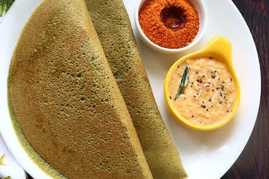

Dry roast oats until lightly golden and fragrant. Allow it to cool.
In a bowl, mix roasted oats, semolina, yogurt, water, and salt to make a batter. Let it ferment for 30 minutes.
Heat oil in a pan, add mustard seeds and urad dal. Once they splutter, add them to the batter.
Add baking soda to the batter and mix well.
Grease idli molds and pour the batter into each mold.
Steam the idlis for 10-12 minutes or until cooked through.
Allow them to cool slightly before unmolding.
Serve hot with chutney or sambar.
Nutrition Information:
Calories: 150
Protein: 5g
Fat: 2g
Carbohydrates: 30g
Fiber: 4g
Ragi Porridge
Ingredients:
1/2 cup ragi flour
2 cups water
1 cup milk (or almond milk)
2-3 tablespoons jaggery or sugar (adjust to taste)
1/4 teaspoon cardamom powder
1 tablespoon chopped nuts (optional)
1 tablespoon raisins (optional)
Instructions:
In a bowl, mix ragi flour with 1/2 cup of water to make a smooth paste.
In a saucepan, bring the remaining water to a boil.
Add the ragi paste to the boiling water, stirring continuously to avoid lumps.
Cook on medium heat for 5-7 minutes until the mixture thickens.
Add milk and continue to cook for another 3-5 minutes.
Stir in jaggery or sugar and cook until fully dissolved.
Add cardamom powder and mix well.
Optionally, add chopped nuts and raisins.
Serve warm or chilled.
Nutrition Information:
Calories: 150
Protein: 4g
Fat: 3g
Carbohydrates: 28g
Fiber: 2g
Moong Dal Cheela
Ingredients:
1 cup moong dal (split green gram)
2-3 green chilies
1 inch ginger
1/2 teaspoon cumin seeds
1 onion, finely chopped (optional)
2 tablespoons chopped coriander leaves
Salt to taste
Oil for cooking
Instructions:
Soak moong dal in water for 4-6 hours or overnight.
Drain the water and grind soaked moong dal with green chilies, ginger, cumin seeds, and salt to a smooth batter consistency.
Add chopped onions and coriander leaves to the batter (if using) and mix well.
Heat a non-stick tawa (griddle) and pour a ladleful of batter on it. Spread it in a circular motion to make a thin cheela.
Drizzle oil around the edges and cook until the cheela turns golden brown.
Flip the cheela and cook for another minute.
Repeat the process with the remaining batter.
Serve hot with chutney or yogurt.
Nutrition Information:
Calories: 130
Protein: 8g
Fat: 3g
Carbohydrates: 18g
Fiber: 4g
Pesarattu

Ingredients:
1 cup whole green gram (moong dal)
2-3 green chilies
1 inch ginger
1/4 cup rice
1 onion, finely chopped (optional)
2 tbsp chopped coriander leaves
Salt to taste
Oil for making dosas
Instructions:
Soak whole green gram and rice together for 4-6 hours.
Drain the water and grind soaked ingredients along with green chilies, ginger, and salt to a smooth batter consistency.
Add chopped onions and coriander leaves to the batter (if using) and mix well.
Heat a tawa (griddle) and pour a ladleful of batter on it. Spread it in a circular motion to make a thin dosa.
Drizzle oil around the edges and cook until the dosa turns golden brown.
Flip the dosa and cook for another minute.
Repeat the process with the remaining batter.
Serve hot with chutney or sambar.
Nutrition Information:
Calories: 120
Protein: 6g
Fat: 1g
Carbohydrates: 22g
Fiber: 5g
Soya Chunks Biryani
Ingredients:
1 cup basmati rice
1 cup soya chunks
2 tablespoons oil
1 large onion, thinly sliced
2 tomatoes, chopped
2 green chilies, slit
1 tablespoon ginger-garlic paste
1/4 cup yogurt
1 teaspoon cumin seeds
1 bay leaf
2-3 cloves
2-3 cardamom pods
1-inch cinnamon stick
1 teaspoon biryani masala
1/2 teaspoon turmeric powder
1/2 teaspoon red chili powder
Salt to taste
2 tablespoons chopped coriander leaves
2 tablespoons chopped mint leaves
2 cups water
Instructions:
Rinse basmati rice under running water until the water runs clear. Soak the rice in water for 30 minutes, then drain.
Boil soya chunks in water for 5-7 minutes or until they become soft. Drain and rinse under cold water, then squeeze out excess water.
Heat oil in a large pot or pressure cooker over medium heat. Add cumin seeds, bay leaf, cloves, cardamom, and cinnamon. Sauté for a minute until fragrant.
Add sliced onions and sauté until golden brown.
Add ginger-garlic paste and green chilies. Sauté for another 2 minutes.
Add chopped tomatoes, turmeric powder, red chili powder, and salt. Cook until the tomatoes are soft and oil starts to separate.
Add yogurt and mix well. Cook for 2-3 minutes.
Add soya chunks, biryani masala, chopped coriander leaves, and mint leaves. Mix well and cook for another 2 minutes.
Add soaked and drained rice. Gently mix with the soya chunks and spices.
Add 2 cups of water and bring to a boil.
Reduce the heat, cover the pot, and cook on low heat for 15-20 minutes, or until the rice is cooked and water is absorbed. If using a pressure cooker, cook for 1 whistle on medium heat.
Turn off the heat and let it sit covered for another 10 minutes.
Fluff the biryani gently with a fork before serving.
Serve hot with raita or a side salad.
Nutrition Information:
Calories: 200
Protein: 10g
Fat: 5g
Carbohydrates: 30g
Fiber: 5g
Kootu Curry
Ingredients:
1 cup black chana (black chickpeas), soaked overnight
1 cup diced raw banana
1 cup diced yam (elephant foot yam)
1/2 cup grated coconut
2 green chilies
1 teaspoon cumin seeds
1 teaspoon turmeric powder
1 teaspoon red chili powder
Salt to taste
2 tablespoons coconut oil
1 teaspoon mustard seeds
2 dried red chilies
1 sprig curry leaves
1/4 teaspoon asafoetida (hing)
Instructions:
Drain the soaked black chana and cook in a pressure cooker with enough water until soft. Drain and set aside.
In a pot, cook the diced raw banana and yam with turmeric powder, red chili powder, salt, and enough water until they are tender. Drain and set aside.
In a blender, grind grated coconut, green chilies, and cumin seeds to a coarse paste using a little water.
In a large pan, combine the cooked black chana, cooked vegetables, and the coconut paste. Mix well.
Cook on medium heat for 5-7 minutes until everything is well combined and heated through.
In a small pan, heat coconut oil. Add mustard seeds and let them splutter.
Add dried red chilies, curry leaves, and asafoetida. Sauté for a few seconds.
Pour this tempering over the Kootu Curry and mix well.
Serve hot with rice or as part of a traditional Kerala meal.
Nutrition Information:
Calories: 180
Protein: 6g
Fat: 8g
Carbohydrates: 22g
Fiber: 7g
Kollu Rasam
Ingredients:
1/2 cup horse gram (kollu), soaked overnight
1 medium-sized tomato, chopped
1 small lemon-sized tamarind ball
1/2 teaspoon turmeric powder
1 teaspoon black pepper
1 teaspoon cumin seeds
2-3 garlic cloves
2 dried red chilies
1 teaspoon mustard seeds
1 sprig curry leaves
1 tablespoon oil
Salt to taste
Fresh coriander leaves for garnish
Instructions:
Drain the soaked horse gram and pressure cook it with enough water until it becomes soft. Set aside.
Soak tamarind in warm water for 15 minutes. Extract the tamarind juice and set aside.
In a blender, grind black pepper, cumin seeds, garlic, and one dried red chili to a coarse powder. Set aside.
Heat oil in a pan. Add mustard seeds and let them splutter.
Add the remaining dried red chili and curry leaves. Sauté for a few seconds.
Add chopped tomatoes and cook until they become soft.
Add turmeric powder, salt, and the ground spice powder. Sauté for a minute.
Add the cooked horse gram along with its water and tamarind extract. Mix well.
Bring the mixture to a boil and let it simmer for 10-15 minutes until the flavors are well combined.
Garnish with fresh coriander leaves.
Serve hot with rice or as a soup.
Nutrition Information:
Calories: 90
Protein: 4g
Fat: 2g
Carbohydrates: 15g
Fiber: 5g
Thoran
Ingredients:
2 cups grated coconut
1 cup finely chopped cabbage (or any vegetable of your choice)
1 small carrot, finely chopped
1/2 cup finely chopped green beans
2 green chilies, slit
1/2 teaspoon turmeric powder
1 teaspoon mustard seeds
2 dried red chilies
1 sprig curry leaves
2 tablespoons coconut oil
Salt to taste
Instructions:
Heat coconut oil in a pan over medium heat. Add mustard seeds and let them splutter.
Add dried red chilies and curry leaves. Sauté for a few seconds.
Add the chopped vegetables (cabbage, carrot, green beans) and green chilies. Sauté for 2-3 minutes.
Add turmeric powder and salt. Mix well.
Add grated coconut and mix thoroughly with the vegetables.
Cover and cook on low heat for 5-7 minutes, stirring occasionally, until the vegetables are tender.
Remove from heat and serve hot as a side dish with rice or chapati.
Nutrition Information:
Calories: 150
Protein: 2g
Fat: 10g
Carbohydrates: 13g
Fiber: 5g
Millet Pongal
Ingredients:
1 cup millet (any variety, such as foxtail millet, barnyard millet, or little millet)
1/2 cup split yellow moong dal
1 teaspoon cumin seeds
1 teaspoon black peppercorns
1/2 teaspoon turmeric powder
2 tablespoons ghee
10-12 cashew nuts
1-inch piece of ginger, finely chopped
1 sprig curry leaves
Salt to taste
4 cups water
Instructions:
Dry roast the millet and split yellow moong dal separately in a pan until they are fragrant. Set aside.
In a pressure cooker, add the roasted millet and moong dal, turmeric powder, and 4 cups of water. Cook for 4-5 whistles or until soft.
In a small pan, heat ghee over medium heat. Add cumin seeds and black peppercorns. Let them splutter.
Add chopped ginger, curry leaves, and cashew nuts. Sauté until the cashews turn golden brown.
Pour this tempering over the cooked millet and dal mixture. Add salt to taste and mix well.
If the pongal is too thick, add some hot water to adjust the consistency. Cook for a few more minutes.
Serve hot with coconut chutney or sambar.
Nutrition Information:
Calories: 250
Protein: 8g
Fat: 10g
Carbohydrates: 35g
Fiber: 5g
Methi Thepla
Ingredients:
2 cups whole wheat flour
1 cup fresh fenugreek leaves (methi), finely chopped
1/2 cup plain yogurt
2-3 green chilies, finely chopped
1 inch ginger, grated
1 teaspoon turmeric powder
1 teaspoon red chili powder
1 teaspoon cumin powder
1 teaspoon coriander powder
1 tablespoon sesame seeds
2 tablespoons oil
Salt to taste
Water, as needed
Oil or ghee for cooking
Instructions:
In a large mixing bowl, combine whole wheat flour, chopped fenugreek leaves, yogurt, green chilies, grated ginger, turmeric powder, red chili powder, cumin powder, coriander powder, sesame seeds, salt, and 2 tablespoons of oil.
Mix well and add water as needed to form a soft and pliable dough. Knead the dough well and let it rest for 15-20 minutes.
Divide the dough into small balls of equal size.
Roll each ball into a thin circle using a rolling pin, dusting with flour as needed to prevent sticking.
Heat a tawa or griddle over medium heat. Place a rolled thepla on the hot tawa.
Cook for a minute or until you see bubbles forming on the surface. Flip the thepla and drizzle a little oil or ghee around the edges.
Cook until both sides are golden brown and fully cooked, pressing gently with a spatula to ensure even cooking.
Remove from the tawa and place on a plate. Repeat the process with the remaining dough balls.
Serve hot with yogurt, pickle, or chutney.
Nutrition Information:
Calories: 150
Protein: 5g
Fat: 6g
Carbohydrates: 20g
Fiber: 3g
Godhuma Rava Upma
Ingredients:
1 cup godhuma rava (wheat rava or broken wheat)
2 tablespoons oil
1 teaspoon mustard seeds
1 teaspoon cumin seeds
1 tablespoon chana dal (split Bengal gram)
1 tablespoon urad dal (split black gram)
2-3 green chilies, slit
1 inch ginger, finely chopped
1 medium onion, finely chopped
1 carrot, finely chopped
1/2 cup green peas (fresh or frozen)
1 tomato, chopped
1 sprig curry leaves
2 tablespoons chopped coriander leaves
2 cups water
Salt to taste
Instructions:
Heat a pan and dry roast the godhuma rava (wheat rava) on medium heat until it turns aromatic and light golden brown. Transfer to a plate and set aside.
In the same pan, heat oil over medium heat. Add mustard seeds and let them splutter.
Add cumin seeds, chana dal, and urad dal. Sauté until the dals turn golden brown.
Add slit green chilies, chopped ginger, and curry leaves. Sauté for a few seconds.
Add chopped onions and sauté until they turn translucent.
Add chopped carrots, green peas, and tomatoes. Cook for 2-3 minutes until the vegetables are slightly tender.
Add 2 cups of water and salt to taste. Bring the mixture to a boil.
Reduce the heat to low and gradually add the roasted godhuma rava while stirring continuously to avoid lumps.
Cover and cook on low heat for 5-7 minutes, stirring occasionally, until the rava is cooked and the water is absorbed.
Turn off the heat and let the upma sit covered for a few minutes.
Garnish with chopped coriander leaves and serve hot.
Nutrition Information:
Calories: 200
Protein: 5g
Fat: 7g
Carbohydrates: 30g
Fiber: 4g
Mixed Lentil Dosa
Ingredients:
1/2 cup split yellow moong dal
1/2 cup toor dal (split pigeon peas)
1/2 cup chana dal (split Bengal gram)
1/2 cup urad dal (split black gram)
1/2 cup masoor dal (red lentils)
1 cup rice
3-4 green chilies
1 inch ginger
1 teaspoon cumin seeds
Salt to taste
Oil for cooking
Instructions:
Rinse all the dals and rice together in water a few times. Soak them in enough water for at least 4-6 hours or overnight.
Drain the soaked dals and rice. Transfer them to a blender.
Add green chilies, ginger, cumin seeds, and salt to the blender. Grind everything into a smooth batter using enough water to achieve a dosa batter consistency.
Transfer the batter to a large bowl. Cover and let it ferment for 6-8 hours or overnight in a warm place.
Once the batter is fermented, mix it well. If the batter is too thick, add a little water to get the desired consistency.
Heat a tawa or griddle over medium heat. Once hot, pour a ladleful of batter onto the center of the tawa. Spread it out in a circular motion to make a thin dosa.
Drizzle a little oil around the edges of the dosa. Cook until the edges start to lift and the dosa turns golden brown.
Flip the dosa and cook for another minute until the other side is also cooked.
Remove from the tawa and serve hot with chutney or sambar.
Repeat the process with the remaining batter.
Nutrition Information:
Calories: 180
Protein: 8g
Fat: 3g
Carbohydrates: 30g
Fiber: 5g
Peanut Sundal
Ingredients:
1 cup raw peanuts
1 tablespoon oil
1 teaspoon mustard seeds
1 teaspoon urad dal (split black gram)
2 dried red chilies, broken into pieces
1 sprig curry leaves
1 green chili, finely chopped
1 teaspoon grated ginger
1/4 teaspoon asafoetida (hing)
Salt to taste
2 tablespoons grated coconut
2 tablespoons chopped coriander leaves
Instructions:
Soak the raw peanuts in water for 3-4 hours or overnight. Drain the water and rinse the peanuts well.
In a pressure cooker, add the soaked peanuts and enough water to cover them. Pressure cook for 2-3 whistles or until the peanuts are soft but not mushy. Drain and set aside.
Heat oil in a pan over medium heat. Add mustard seeds and let them splutter.
Add urad dal and sauté until it turns golden brown.
Add dried red chilies, curry leaves, green chili, grated ginger, and asafoetida. Sauté for a few seconds.
Add the cooked peanuts and salt to taste. Mix well and sauté for 3-4 minutes, allowing the flavors to blend.
Turn off the heat and add grated coconut. Mix well.
Garnish with chopped coriander leaves and serve warm as a snack or side dish.
Nutrition Information:
Calories: 150
Protein: 7g
Fat: 10g
Carbohydrates: 8g
Fiber: 3g
Carrot Kosambari
Ingredients:
1 cup grated carrot
1/2 cup split moong dal (soaked)
1 tablespoon fresh coconut, grated
1 green chili, finely chopped
1 tablespoon lemon juice
1 tablespoon chopped coriander leaves
Salt to taste
Instructions:
Soak split moong dal in water for about 1 hour.
Drain the water from dal and mix it with grated carrot in a bowl.
Add chopped green chili, grated coconut, lemon juice, chopped coriander leaves, and salt. Mix well.
Refrigerate for 15-20 minutes before serving.
Nutrition Information:
Calories: 100
Protein: 5g
Fat: 1g
Carbohydrates: 20g
Fiber: 4g
Ragi Nachos
Ingredients:
1 cup ragi flour
1/4 cup corn flour
1/4 teaspoon cumin powder
1/4 teaspoon chili powder
Salt to taste
Water, as needed
Oil for frying
Instructions:
In a mixing bowl, combine ragi flour, corn flour, cumin powder, chili powder, and salt.
Add water gradually and knead the mixture into a smooth dough.
Divide the dough into small portions and roll each portion into thin sheets.
Cut the sheets into triangular or square shapes to make nachos.
Heat oil in a pan for frying.
Fry the nachos in batches until they turn crispy and golden brown.
Remove from oil and drain excess oil on paper towels.
Let them cool slightly before serving.
Nutrition Information:
Calories: 100 (per serving)
Protein: 3g
Fat: 5g
Carbohydrates: 10g
Fiber: 2g
Masala Papad
Ingredients:
4 papads
1 onion, finely chopped
1 tomato, finely chopped
1/2 cucumber, finely chopped
2 green chilies, finely chopped
1/4 cup coriander leaves, chopped
1/2 teaspoon chaat masala
1/4 teaspoon red chili powder
Salt to taste
1 lemon, juiced
2 tablespoons sev (crispy chickpea noodles)
Instructions:
Roast the papads on an open flame until crispy. Set aside.
In a bowl, mix together onion, tomato, cucumber, green chilies, coriander leaves, chaat masala, red chili powder, salt, and lemon juice.
Place the roasted papads on serving plates.
Spread the prepared mixture evenly over each papad.
Sprinkle sev on top for added crunch.
Serve immediately as a crunchy and tangy appetizer.